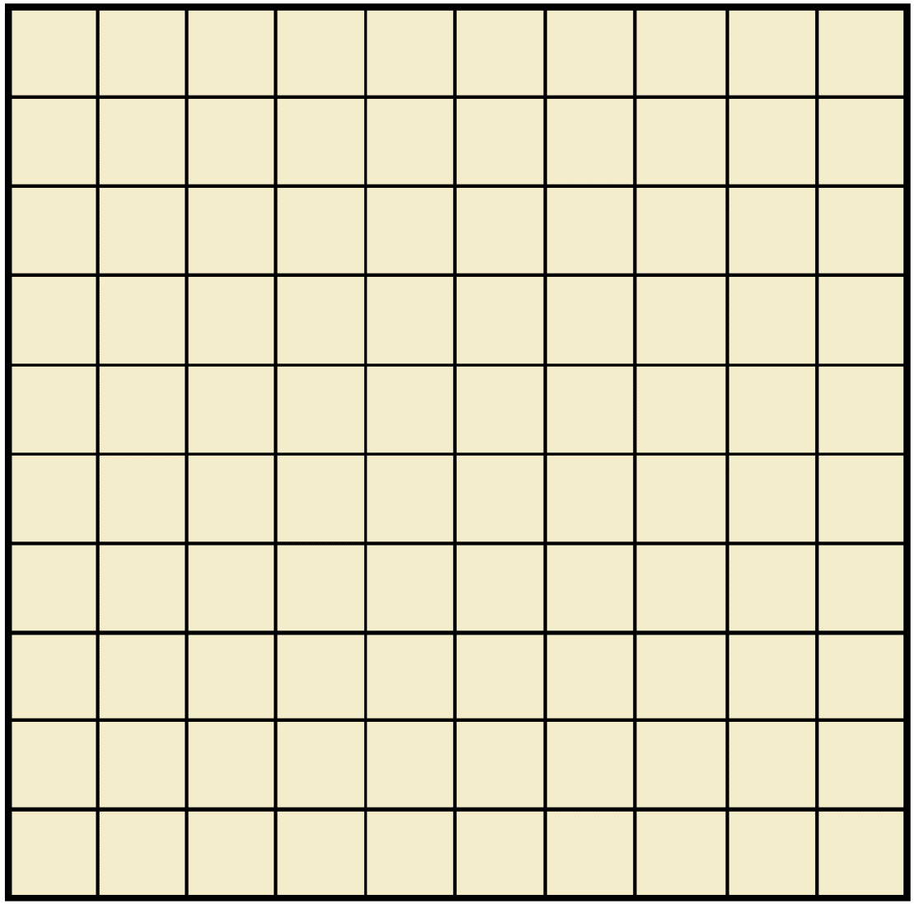
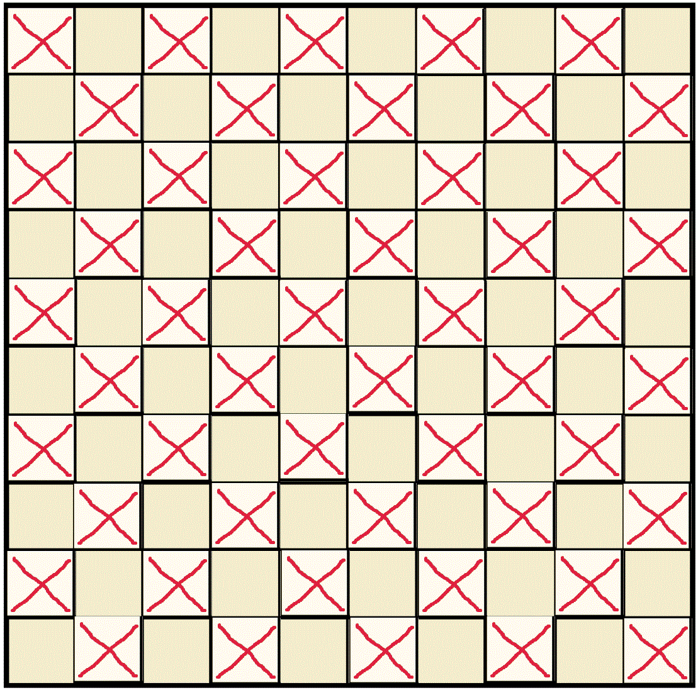

Probabilistic Analysis of Battleship Strategy
A while ago, I created a battleship game for a computer science class I was taking. One of the extra credit assignments in the class was to design an easy "AI" and a difficult "AI", for the game.
I.e., design a good strategy for winning and a strategy for winning that was passable.
For the easy strategy, I implemented an algorithm that guessed totally at random. For the hard strategy, it guesses every other square on the grid.
This follows from the fact that in an ordinary game of battleship, the smallest boat that can be placed down is 2 spaces long. So if you eliminate
all spaces of length 2, you must have found all the boats, and so you can win the game.
A visual explanation is :

This is the ordinary board. The strategy I designed targets squares similar to this:

In all the simulations I do with a large number(i.e. millions) of games, the Good Strategy wins out over the Random Strategy roughly 4/5 of the time.
Let us call the random player Player X, and the "better" player Player Y.